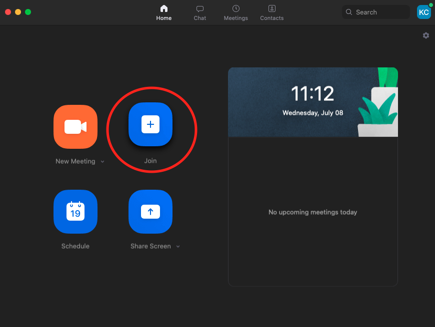
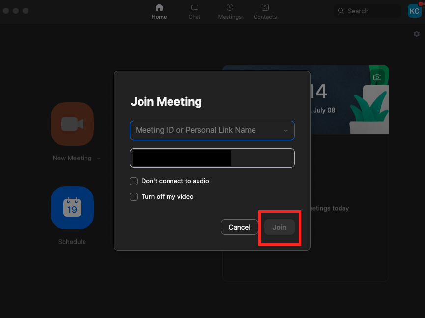
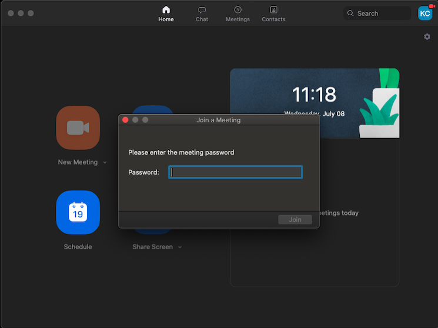
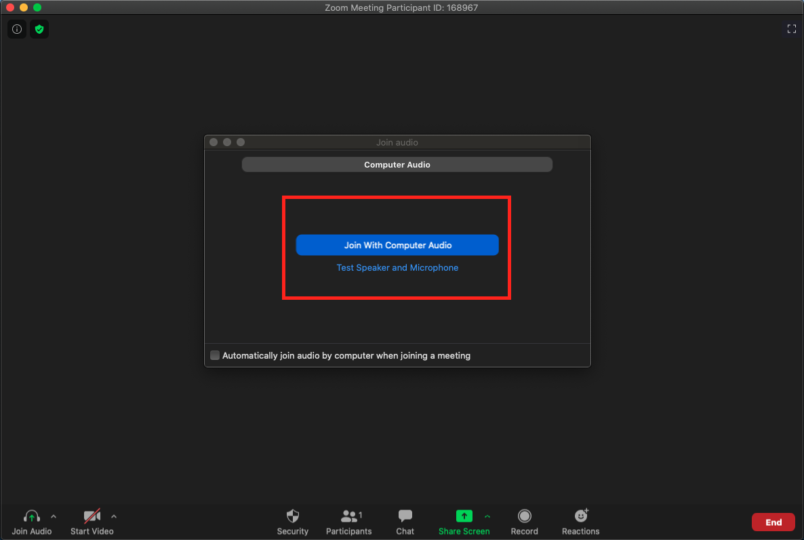
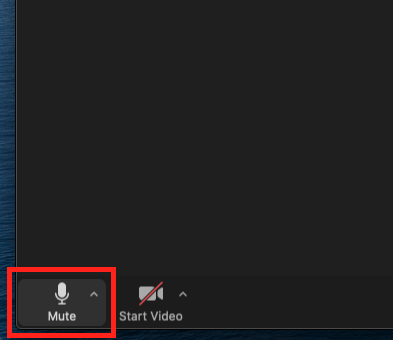
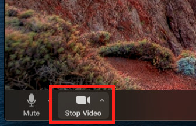
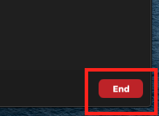

Step 1:
Open Zoom and click the "Join" button. This will be a giant blue button with a "+" icon in the middle.
Step 2:
You will then be asked to provide the meeting ID. Type in the ID and click on the "Join" button at the bottom right of the window.
Step 3:
Some meetings require you to enter a password which would've been sent along with the meeting ID. Type in the password and then you'll join the call.
Step 4:
When you first join a call, you will be asked to "join with computer audio". Click this button and your call will begin.
Step 5:
During the call, you can mute your microphone by clicking the microphone icon at the bottom left of the screen. A red line will appear on the icon to show that you are muted. Click on the icon again to turn your microphone back on.
Step 6:
You can also turn off your camera if you don't want to be seen on the call by clicking the camera icon at the bottom left of the screen. A red line will appear on the icon to show that your video has been turned off. Click the camera icon again to turn video back on.
Step 7:
To end or leave a call, click on the red "End" button at the bottom right of the screen and then click the grey "Leave Meeting" button.